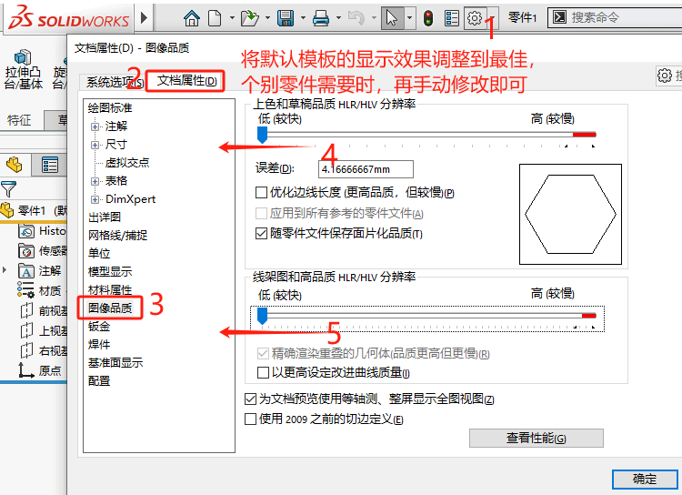
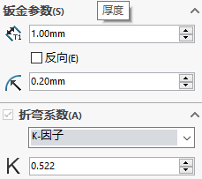
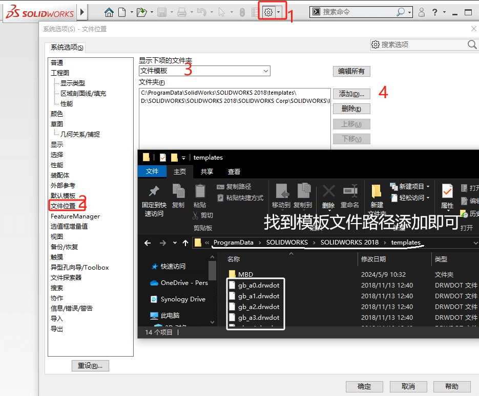

SOLIDWORKS文件模板
使用模板能节省创建新文档的时间，避免因手动预设录入产生的错误，如：设置文档属性，填写标题栏信息，处理BOM表格等等。
SOLIDWORKS文件模板包括有：如下3类
- 零件.prtdot
- 装配体.asmdot
- 工程图模板.drwdot
制作零件模板
文档属性
这部分可以参考：SOLIDWORKS属性
| 属性名 | 类型 | 表达式 | 评估的值 |
|---|---|---|---|
| 所在文件夹 | 文字 | $PRP:”SW-Folder Name” | E:\零件-自定义属性\ |
| 文件名 | 文字 | $PRP:”SW-文件名称” | 零件-自定义属性 |
| … |
显示
制作钣金模板
钣金参数
钣金模板相比零件模板会多出钣金特有的属性，例如：”展开长宽”、“板厚”、“折弯因子”等等。
规格表
文档属性
材料
制作钣金模板
属性
焊件切割清单自动生成长、宽、厚规格
制作装配体模板
文档属性
装配体一般需要定制的内容不多
制作工程图模板
图库
工程图标题栏
属性映射
名称一致就可以建立链接，其中材料，重量、图纸比例的值不用输入，solidworks已经计算了，直接就
可以引用。其他需要手工输入的，将它放于零件属性（建议放于零件）。
表格位置
材料明细表定位点位置
文档属性
尺寸
字体
文档属性
单位

出详图

尺寸

注解

保存标准

设置文件位置
设置默认模板
如何在后续新建或导入stp模型时，使用自定义的模板文件。就需要在【系统选项-默认模板】里设置模板文件路径。
1、找到【工具-选项】系统选项，默认模板。
2、设置零件、装配体、工程图的默认模板，这里我所选模板是“gb_part”，实际情况按自定义模板的名称来选。